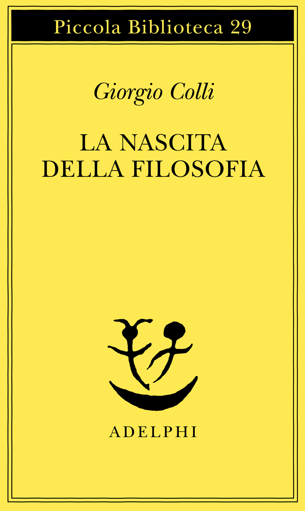
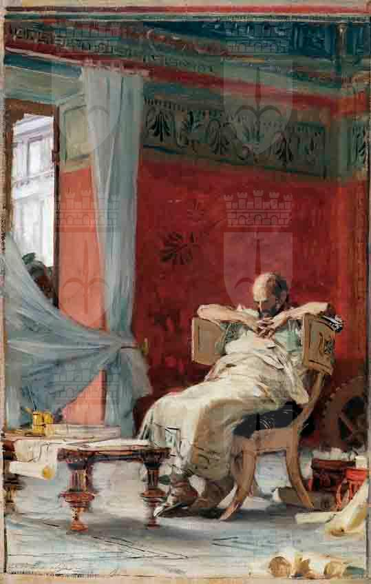
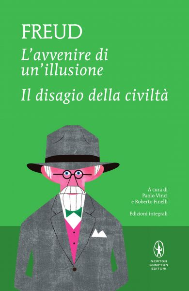

58:47 · 6 OPERE
A passeggio sulla luna.
Il filo del discorso
Il contributo parte da una domanda sul dissenso: contestare una narrazione dominante basta a produrre conoscenza, oppure si può finire per ripeterne le tecniche con segno opposto? Il relatore difende il coinvolgimento personale di chi considera la qualità del ragionamento un bene comune. Con Schattschneider osserva che il potere si esercita anche scegliendo le alternative e i temi sui quali si discuterà; con McLuhan e Adorno interroga la credibilità costruita dai mezzi di comunicazione. Platone e il labirinto letto attraverso Giorgio Colli introducono un criterio più esigente: un discorso ordinato può comunque nascondere trappole, mentre una divulgazione utile deve permettere a chi ascolta di verificare e imparare autonomamente. La seconda parte applica questa impostazione alle contestazioni degli allunaggi. Il relatore critica un documentario non identificato con certezza, poi ricostruisce per immagini il cammino verso Apollo 11: la corsa spaziale, i programmi precedenti, Saturn V, le equazioni, il lavoro dei programmatori, il rendez-vous in orbita lunare e le prove di Apollo 8 e Apollo 10. Il centro del racconto è la continuità di un progetto collettivo, insieme intellettuale, tecnico e organizzativo. La descrizione della discesa, della risalita e del ritorno rende visibile la relazione tra calcoli, materiali, procedure e coraggio, senza presentare questa esposizione divulgativa come un manuale ingegneristico. Le fotografie della superficie, il confronto con Chang’e 4 e le riprese orbitali del sito di Apollo 11 conducono infine a una rivendicazione del valore condiviso dell’impresa. La polemica rimane aspra, ma il suo esito dichiarato è didattico: distinguere il dubbio che cerca prove dalla sfiducia che sostituisce una conclusione alla ricerca. Archimede e Newton richiamano la profondità storica di quel lavoro; una frase di Freud chiude con la speranza che la voce dell’intelletto riesca a farsi ascoltare. Giudizi politici e personali restano attribuiti al relatore; le note distinguono le sue interpretazioni dai riscontri storici e correggono alcune imprecisioni su astronauti, quote, materiali e origine delle immagini.
I libri nel discorso

The Semisovereign People. A Realist’s View of Democracy in America
Copertina: Dryden Press · edizione 1975 con introduzione di David Adamany
Copertina autentica blu dell’edizione successiva con introduzione di David Adamany. Il testo originale è del 1960; la copertina non viene attribuita al volume mostrato nel video.
Schattschneider, titolo inglese, sottotitolo e 1960 sono espliciti; segue il passo sulla definizione delle alternative.
Passaggio 6:38 ↗ · Fonti e libro ↗
Gli strumenti del comunicare (Understanding Media)
Identificazione probabile
Copertina: Il Saggiatore, 2023, traduzione di Ettore Capriolo; opera originale del 1964.
Immagine autentica dell’opera, controllata visivamente; l’edizione di riferimento non è attribuita al filmato.
McLuhan e la formula sul mezzo come messaggio sono espliciti; il titolo Understanding Media non viene pronunciato, il collegamento è al luogo teorico della formula.
Passaggio 9:17 ↗ · Fonti e libro ↗
La nascita della filosofia
Copertina: Adelphi · Piccola Biblioteca 29 · prima pubblicazione 1975
Copertina ufficiale del catalogo Adelphi del volume cartaceo. Ristampa corrente non identificata come esemplare del filmato.
Giorgio Colli e La nascita della filosofia sono nominati nel ragionamento sul labirinto e i pericoli della razionalità.
Passaggio 17:41 ↗ · Fonti e libro ↗
Minima moralia
Copertina: Einaudi, 2015
Titolo Minima moralia e Adorno espliciti, con il passo sulla vita giusta nella vita falsa.
Passaggio 25:37 ↗ · Fonti e libro ↗
Archimede
Studio preparatorio: Archimede,1880: Museo Revoltella · studio preparatorio per Archimede ·1880
Riproduzione museale dello studio preparatorio, olio su tela 53,5 × 35,5 cm, con filigrana del museo conservata. Riferimento artistico: non è una copertina editoriale e non si presume coincida con l’immagine esatta proiettata.
Il relatore nomina il ritratto di Archimede di Niccolò Barabino e descrive il soldato romano. Soggetto verificato, versione della riproduzione del video non accertata.
Passaggio 55:57 ↗ · Fonti e libro ↗
L’avvenire di un’illusione
Identificazione probabile
Raccolta: L’avvenire di un’illusione / Il disagio della civiltà: Newton Compton · volume con due saggi · MiniMammut 176
Copertina autentica di una raccolta moderna contenente L’avvenire di un’illusione e Il disagio della civiltà. Non è la copertina di un’edizione autonoma del solo saggio 1927, né un’edizione attribuita al video.
Freud e 1927 sono espliciti; il testo sulla voce dell’intelletto è riscontrato nel capitolo X di L’avvenire di un’illusione. Titolo non pronunciato.
Passaggio 57:40 ↗ · Fonti e libro ↗